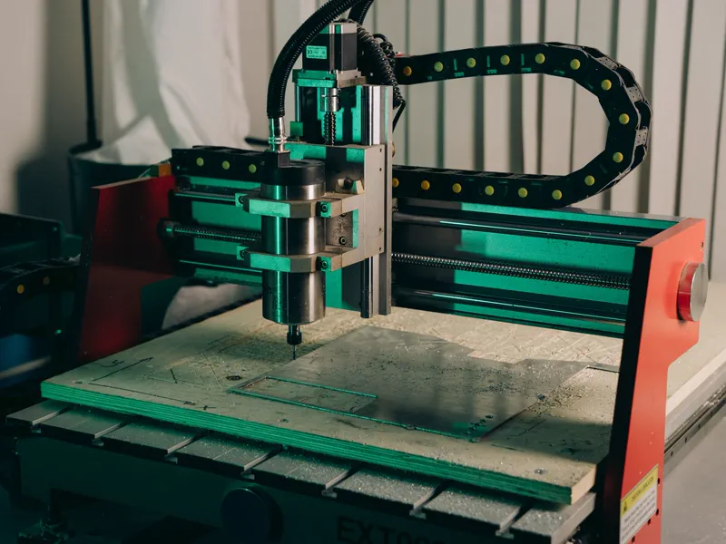

O recorte deste artigo é o documento técnico: o que a apreciação de riscos é, como é construída e o que ela precisa conter. A execução da adequação em campo — projeto de proteções, intertravamentos, painel e validação — está na página de adequação de máquinas à NR-12 em Vitória ES, e a formação de preço dessa adequação está em quanto custa adequar uma máquina à NR-12.
Apreciação, análise e avaliação de riscos: o que é cada uma
Os três termos aparecem misturados em proposta comercial, em auto de infração e até em laudo. Na ABNT NBR ISO 12100 — a norma de princípios gerais de projeto de máquinas que a NR-12 adota como referência para o tema — eles têm significados distintos e encaixados:
- Análise de riscos: determinação dos limites da máquina, identificação dos perigos e estimativa do risco de cada situação perigosa;
- Avaliação de riscos: o julgamento, a partir da estimativa, de se o risco é aceitável ou se precisa ser reduzido;
- Apreciação de riscos: o processo completo, isto é, análise mais avaliação.
Quando o risco não é aceitável, entra a redução de riscos, e depois dela o processo é repetido: o risco que sobrou é estimado e avaliado de novo. A apreciação é, portanto, iterativa. Um documento que estima o risco uma única vez, lista proteções e termina ali não mostra que as proteções resolveram o problema — mostra só que foram sugeridas.
Na prática de chão de fábrica, "análise de risco de máquinas" virou sinônimo de todo o processo. Não há problema no uso coloquial, desde que o documento entregue contenha as quatro etapas e a reavaliação após as medidas.

As quatro etapas da ABNT NBR ISO 12100
1. Determinação dos limites da máquina
É a etapa mais pulada e a que mais compromete o resto. Antes de olhar para o perigo, é preciso descrever a máquina que está sendo apreciada:
- limites de uso: uso previsto, modos de operação (automático, manual, ajuste, manutenção), perfil de quem opera e o mau uso razoavelmente previsível — o atalho que o operador toma quando a produção aperta;
- limites de espaço: amplitude dos movimentos, área de alimentação e retirada de peça, acesso para manutenção, interface com outras máquinas e com a circulação;
- limites de tempo: vida útil prevista da máquina e dos componentes que se desgastam, como freios, embreagens e dispositivos de segurança;
- outros limites: material processado, ambiente (poeira, umidade, temperatura), exigências de limpeza e higienização.
2. Identificação dos perigos
A identificação percorre todas as fases da vida da máquina, não só a produção: transporte, instalação, ajuste, troca de ferramenta, operação, limpeza, localização de falha, manutenção e desmontagem. Em cada fase, listam-se os perigos mecânicos (esmagamento, cisalhamento, corte, arrastamento, projeção de partes), elétricos, térmicos, de ruído e vibração, de materiais e substâncias e ergonômicos. Na foto acima, por exemplo, a fresadora tem o ponto de operação da ferramenta, o movimento do pórtico sobre as guias e a projeção de cavaco como situações distintas, cada uma com sua exposição.
O registro útil é feito por zona de perigo, não por máquina. Uma prensa tem ponto de operação, transmissão, alimentação e zona traseira; tratar tudo como "risco da prensa" impede justificar por que cada região recebeu uma medida diferente.
3. Estimativa do risco
Para cada situação perigosa, o risco é estimado a partir de dois elementos: a gravidade do dano possível e a probabilidade de ocorrência desse dano. A probabilidade, por sua vez, depende da frequência e da duração da exposição, da chance de o evento perigoso acontecer e da possibilidade de evitar ou limitar o dano. O método usado para transformar esses elementos em um resultado comparável é assunto da próxima seção.
4. Avaliação do risco
Com o risco estimado, decide-se se ele é aceitável. Se não for, aplica-se a redução pela ordem de prioridade da norma: primeiro medidas de projeto inerentemente seguro (eliminar o perigo, reduzir força ou velocidade), depois proteções e medidas complementares (proteções fixas e móveis intertravadas, dispositivos de proteção, parada de emergência) e, por último, informações para uso (sinalização, procedimento, treinamento). Sinalização e treinamento não substituem proteção onde a proteção é viável.
Métodos de estimativa: HRN e outros
A ABNT NBR ISO 12100 diz o que a estimativa precisa considerar, mas não impõe como pontuar. Por isso existem vários métodos, e nenhum deles é "o oficial" da NR-12. O que torna o método defensável é estar escrito, ter critérios claros e ser aplicado da mesma forma em todas as máquinas do parque.
HRN — Hazard Rating Number
O HRN é o método mais usado em apreciações de máquinas no Brasil. Ele multiplica quatro parâmetros, cada um escolhido em uma escala tabelada:
- probabilidade de ocorrência do evento perigoso;
- frequência de exposição ao perigo;
- grau de dano possível, do arranhão à fatalidade;
- número de pessoas expostas.
O produto cai em uma faixa de risco, de desprezível a inaceitável, que orienta a prioridade de ação. A vantagem prática é a rastreabilidade: guardados os quatro parâmetros, qualquer engenheiro que abrir o documento anos depois entende por que aquela zona recebeu aquela classificação — e consegue comparar com o HRN recalculado depois da proteção. Para ver a conta montada parâmetro a parâmetro, a calculadora de HRN e categoria do Sistema NR12 mostra o resultado na hora, como triagem preliminar.
Matrizes de risco e grafos de risco
Matrizes de gravidade × probabilidade, em três, quatro ou cinco níveis, são mais simples e comuns em análises de processo. Os grafos de risco percorrem perguntas em sequência — gravidade, exposição, possibilidade de evitar — e são a ferramenta usada para definir o nível exigido do sistema de comando, tema da próxima seção. Nada impede combinar métodos: HRN para priorizar o parque, grafo para dimensionar o comando de cada zona.
Da apreciação à categoria e ao PL da ABNT NBR ISO 13849-1
A apreciação não termina na nota de risco. Quando a medida escolhida depende de uma função de segurança executada pelo sistema de comando — o intertravamento de uma porta, a cortina de luz, a parada de emergência —, é preciso definir o quão confiável esse comando tem que ser.
Pela ABNT NBR ISO 13849-1, o grafo de risco usa três parâmetros — gravidade da lesão (S), frequência ou tempo de exposição (F) e possibilidade de evitar o perigo (P) — e resulta no nível de desempenho requerido (PLr), de "a" a "e". A categoria (B, 1, 2, 3 ou 4) descreve a arquitetura do comando — canal simples, canal duplo, monitoramento — e é um dos elementos que, junto com a confiabilidade dos componentes, a cobertura de diagnóstico e a resistência a falhas de causa comum, determina o PL efetivamente alcançado. A antiga ABNT NBR 14153 trabalha com o grafo que leva diretamente à categoria, e ainda aparece em muitos laudos e projetos.
O ponto que a fiscalização costuma cobrar é a coerência: se a apreciação classifica uma zona como de dano grave, exposição frequente e difícil de evitar, o comando instalado precisa ter arquitetura compatível. Relé comum ligado a uma chave fim de curso convencional não sustenta essa conclusão, por melhor que a proteção pareça.
Risco inicial × risco residual
O risco inicial é o estimado na máquina como ela está, sem as medidas que serão propostas. O risco residual é o que permanece depois de implantadas as medidas — e ele nunca é zero. A apreciação completa apresenta os dois lado a lado, zona por zona, estimados com o mesmo método e os mesmos critérios; do contrário, a redução mostrada é só aparente.
O residual também precisa ser comunicado: o que sobrou depois das proteções vira sinalização, procedimento, exigência de EPI e conteúdo do treinamento do operador. Um risco residual que não aparece no manual nem no treinamento é um risco que ninguém sabe que existe.
Reavaliar é parte do documento, não um anexo opcional. Instalada a proteção, a zona é reestimada com os mesmos parâmetros, e a função de segurança é verificada em campo — teste do intertravamento, da parada de emergência e, quando há dispositivo de detecção, do tempo de parada usado para calcular a distância de segurança.
O que o documento precisa conter e quem assina
Conteúdo mínimo de uma apreciação defensável
- identificação inequívoca da máquina: TAG, fabricante, modelo, número de série, ano, setor e fotos;
- descrição dos limites da máquina e dos modos de operação considerados;
- método de estimativa adotado, com as escalas e as faixas de aceitação escritas;
- lista de zonas de perigo, cada uma com as fases de vida e as tarefas em que há exposição;
- estimativa do risco inicial, com os parâmetros escolhidos e a justificativa;
- medidas de redução propostas, na ordem de prioridade da norma;
- PLr ou categoria requerida para cada função de segurança;
- estimativa do risco residual e forma de comunicação desse residual;
- data, equipe que participou do levantamento, responsável técnico e ART.
Esse documento é peça do conjunto que a NR-12 cobra por máquina — junto com inventário, prontuário, plano de ação com prazo e registro de treinamento. No Sistema NR12, a apreciação é registrada por zona de perigo, com os quatro parâmetros do HRN guardados, e o risco residual aparece ao lado do inicial quando a zona é reavaliada.
Quem elabora e quem assina
A apreciação de riscos é elaborada sob responsabilidade de profissional legalmente habilitado — com atribuição no conselho de classe para a atividade — e a responsabilidade técnica se materializa na ART registrada. O levantamento melhora muito quando envolve operador, manutenção e SESMT: são eles que conhecem o atalho, a limpeza fora de hora e a ferramenta que troca toda semana. Mas participar não é assinar. A emissão de laudos técnicos com ART segue a mesma lógica: quem assina responde pelo conteúdo.
Erros comuns que invalidam a apreciação de riscos
- Copiar de outra máquina. Duas guilhotinas do mesmo modelo, em setores diferentes, com alimentação manual numa e automática na outra, têm exposições diferentes. Documento copiado carrega TAG errada, foto de outra máquina e parâmetros que não descrevem a realidade — e isso aparece na primeira leitura atenta.
- Considerar só a produção. Grande parte dos acidentes graves acontece em manutenção, ajuste, limpeza e desobstrução, com a proteção aberta e a máquina ainda energizada. Se essas tarefas não estão na apreciação, o bloqueio de energias e o modo de ajuste também não estão.
- Não refazer após modificação. Troca de ferramental, retrofit de comando, aumento de velocidade, mudança de layout ou nova célula ao lado alteram perigos e exposição. A apreciação antiga continua no prontuário, mas descreve uma máquina que não existe mais.
- Pular os limites da máquina. Sem declarar uso previsto e mau uso previsível, a avaliação fica sem referência — qualquer conclusão serve.
- Escolher a proteção antes do risco. Quando a cortina de luz já foi comprada, a tentação é ajustar a apreciação para justificá-la. O caminho certo é o inverso.
- Não estimar o residual. Sem a reavaliação, não há prova de que o risco chegou a nível aceitável.
Parques com muitas máquinas enfrentam ainda um problema de gestão: apreciações em planilhas pessoais, cada uma com um critério, que param de ser atualizadas quando o autor sai da empresa. O mesmo padrão aparece nas inspeções de vasos de pressão, como descrito em por que a planilha de inspeção para de funcionar.
Perguntas frequentes sobre apreciação de riscos NR-12
O que é apreciação de riscos na NR-12?
É o processo, descrito na ABNT NBR ISO 12100, que determina os limites da máquina, identifica os perigos, estima e avalia o risco de cada zona de perigo e decide se é preciso reduzi-lo. Ela é a base técnica que justifica cada proteção instalada e a categoria de segurança adotada no sistema de comando.
Qual a diferença entre apreciação, análise e avaliação de riscos?
Na terminologia da ABNT NBR ISO 12100, a análise de riscos reúne a determinação dos limites, a identificação dos perigos e a estimativa do risco. A avaliação de riscos é o julgamento de se o risco estimado é aceitável ou exige redução. A apreciação de riscos é o conjunto das duas: análise mais avaliação.
O HRN é obrigatório na apreciação de riscos?
Não. A ABNT NBR ISO 12100 define os elementos que a estimativa precisa considerar, mas não impõe um método. O HRN é muito usado por registrar numericamente probabilidade, frequência de exposição, gravidade e número de pessoas expostas, o que permite comparar o risco inicial com o residual. Matrizes de risco e grafos de risco também são aceitos, desde que o critério esteja escrito e seja aplicado de forma coerente.
Quem pode assinar a apreciação de riscos de uma máquina?
Profissional legalmente habilitado, com atribuição no conselho de classe para a atividade, que responde tecnicamente pelo documento por meio da ART registrada. O técnico de segurança e a equipe de manutenção participam do levantamento, mas a responsabilidade técnica pela apreciação é do profissional que assina.
Quando a apreciação de riscos precisa ser refeita?
Sempre que a máquina ou o seu uso mudar de forma que altere os perigos ou a exposição: modificação mecânica ou no comando, troca de ferramental, mudança de layout, novo modo de operação, após acidente ou quase acidente e quando a proteção instalada é alterada. Também é boa prática revisá-la de forma periódica, junto com a rotina de inspeção das proteções.
Precisa disso resolvido por engenharia habilitada?
A Axial Engenharia elabora apreciação de riscos NR-12 e conduz a adequação de máquinas com profissional legalmente habilitado e ART registrada, atendendo presencialmente Vitória, Vila Velha, Serra, Cariacica, Viana, Guarapari e Fundão, com deslocamento programado para Anchieta, Aracruz e Linhares. Mande pelo WhatsApp a foto da placa da máquina e um vídeo curto dela operando, e o escopo volta no mesmo dia útil.